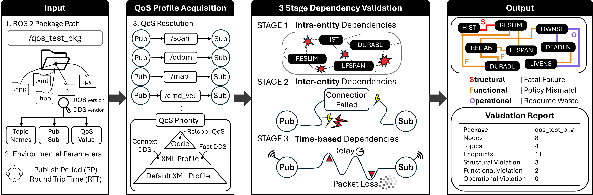

QoS Guard
Catch broken ROS 2 QoS settings before they reach your robot.
In ROS 2, every topic connection runs on DDS and its Quality of Service (QoS) policies, such as reliability, durability, history, and deadline. When a publisher and a subscriber use QoS settings that do not match, or a single node uses an unsafe combination, communication breaks in ways that are hard to see. Nodes fail to connect, messages are silently dropped, or a process crashes at runtime. These failures rarely print a clear error, so teams lose hours guessing which policy is at fault.
What QoS Guard does
QoS Guard scans your ROS 2 package and flags risky QoS before you deploy. It reads your XML profiles and source code (for example rclcpp::QoS and create_publisher), pairs up every publisher and subscriber by topic, and checks each pair against a library of known QoS conflicts. It then reports the risky pairs, grouped by how badly they break communication. There is no runtime to launch, no robot to connect, and no live ROS 2 session required. You point it at a package and read the report.
ros2 run, no robot, no live ROS 2 session.

Get started
Install QoS Guard (see Installation below), then point it at any ROS 2 package.
Check a whole package
qos_guard /path/to/your_ros2_package
Specify DDS and ROS version
qos_guard /path/to/package fast jazzy
No ROS 2 installed? Run from the repo root
cd /path/to/QoS-Guard
python3 -m qos_guard.qos_checker /path/to/package
Where to go next
New to DDS QoS? Follow these pages in order. Each page stands on its own, so you can also jump straight to whatever you need.
| Step | Page | What you get |
|---|---|---|
| 1 | QoS Encyclopedia | Plain-language definitions of the 16 QoS policies and when each one matters |
| 2 | Dependency Map | How the policies affect one another, shown as an interactive graph and a quick lookup table |
| 3 | Rules & Evidence | The exact QoS combinations QoS Guard flags, each with a worked explanation and the test data behind it |
| 4 | Paper | The research background and abstract, for readers who want the full study |
Requirements
Installation
Option A: ROS 2 package (recommended)
1. Clone into your workspace src
mkdir -p ~/ros2_ws/src
cd ~/ros2_ws/src
git clone <repository_URL> qos-guard
2. Build and source
cd ~/ros2_ws
colcon build --packages-select qos_guard
source install/setup.bash
3. Run
ros2 run qos_guard qos_guard /path/to/any/ros2/package
Option B: Standalone
1. Clone and go to repo root
cd /path/to/QoS-Guard
2. Run
python3 -m qos_guard.qos_checker /path/to/your_ros2_package
Usage modes
Package mode (default)
Check a whole ROS 2 package. The tool finds XML files and scans source for publishers/subscribers, builds pairs by topic, and runs rule checks.
qos_guard <package_path> [dds] [ros_version] [publish_period=<N>ms] [rtt=<N>ms]
XML pair mode
Verify one writer XML and one reader XML (Fast DDS and Connext only).
qos_guard --xml <pub.xml> <sub.xml> <dds> <ros_version> [publish_period=<N>ms] [rtt=<N>ms]
Cyclone DDS does not support XML QoS profiles. For Cyclone, use package mode only.
List mode
List XML files the tool would scan under a package.
qos_guard --list <package_path>
Extended usage notes, DDS support tables, FAQ, and test-package details are in QoS_Guard.md.
Verification results
The tool reports violations by severity:
If there are no violations, you see: All Entities are safe !